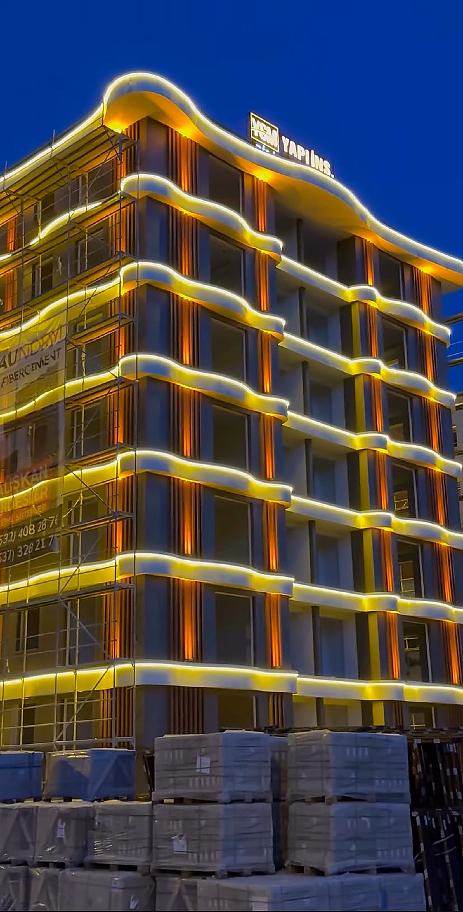
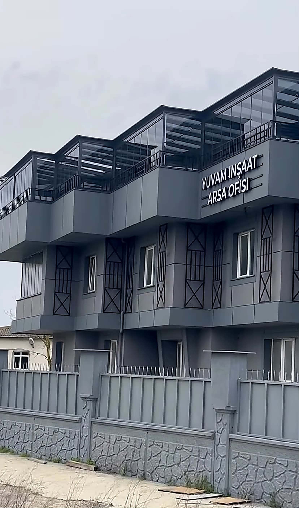

Fibercement
Modern cephelerde güçlü yüzey karakteri ve dengeli bir görünüm için fibercement levha uygulamaları.
BİR YAPI NASIL YÜKSELİR?
Fibercement, betopan ve dış cephe sistemlerinde; hazırlıktan özenli bitişe uzanan uygulama sürecini keşfedin.

GERÇEK PROJELERİMİZDENİhtiyaçlar belirlenir, zemin değerlendirilir ve yapının yol haritası hazırlanır.
YAPININ DIŞA AÇILAN KARAKTERİ
Yapıyı korur, mimari dili tamamlar ve bulunduğu yere kimlik kazandırır. Fibercement ve betopan uzmanlığımızı titiz uygulama anlayışımızla bir araya getirerek dış cephelerde uzun ömürlü, dengeli sonuçlar ortaya koyuyoruz.
Çalışma yaklaşımımız ↗
UZMANLIK ALANLARIMIZ
Projenin mimari çizgisine, kullanım ihtiyacına ve yüzey karakterine uygun cephe sistemleri.
Modern cephelerde güçlü yüzey karakteri ve dengeli bir görünüm için fibercement levha uygulamaları.
Farklı mimari ihtiyaçlara uyum sağlayan, özenli detay çözümleriyle tamamlanan betopan uygulamaları.
Alt konstrüksiyondan son yüzey detayına kadar yapıyla birlikte ele alınan cephe uygulamaları.
CEPHEYE YAKINDAN BAKIN
Levha seçimi kadar uygulama sistemi ve birleşim detayları da cephe kararının parçasıdır.
Düz, dokulu ya da farklı kaplama görünümleri; yapının mimari dili ve seçilen ürünün özellikleriyle birlikte değerlendirilir.
MİMARİ KARAKTERAlt konstrüksiyon, bağlantı düzeni ve levha yerleşimi; proje detaylarına ve üretici uygulama föyüne göre belirlenir.
SİSTEM KARARIPencere kenarı, köşe, parapet ve derz geçişleri; temiz bir bitiş için cephe planıyla birlikte çözülür.
UYGULAMA DETAYILevha tipi, kalınlığı ve montaj aralıkları seçilen ürünün teknik dokümanı ve proje koşullarına göre netleştirilmelidir.
İlk kararları verirken aklınıza takılabilecek birkaç not.
Karar; yapının mimari dili, istenen yüzey, kullanım koşulları ve seçilecek ürünün teknik föyü birlikte değerlendirilerek verilir.
Yüzey alanı kadar alt konstrüksiyon, birleşim detayları ve erişim koşulları da değerlendirilmelidir. Net kapsam için proje bilgileri ve yerinde inceleme gerekir.
İşin konumu, mevcut cephenin birkaç fotoğrafı ve düşündüğünüz uygulama türü ilk değerlendirmeyi kolaylaştırır.
SAHADAN KARELER
UYGULAMADA YAKLAŞIMIMIZ
Her cephe, doğru hazırlık ve dikkatli uygulamayla değer kazanır. Malzeme seçimi, yüzey düzeni ve birleşim detayları aynı bütünün parçalarıdır.
Projeniz için görüşelim ↗MÜŞTERİ DENEYİMLERİ
Görüşünüzü Instagram üzerinden iletebilirsiniz. Açık izniniz olmadan adınız veya yorumunuz sitede yayınlanmaz.
Deneyiminizi paylaşın ↗YENİ BİR BAŞLANGIÇ
Yeni bir cephe uygulaması planlıyorsanız bize ulaşın. İhtiyacınızı ve proje detaylarını birlikte değerlendirelim.
Instagram profilini açıp mesaj gönderin↗Elinizdeki bilgiler yeterli; tüm detayların baştan hazır olması gerekmez.